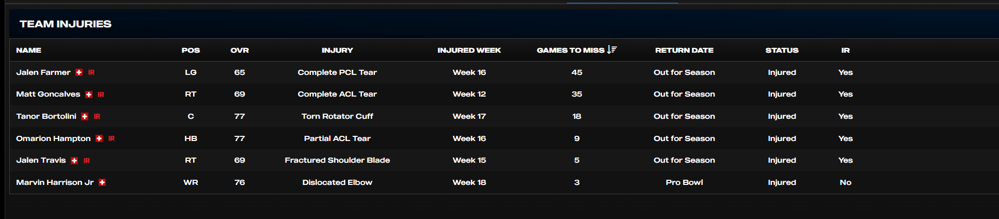

OKLAHOMA CITY BISONS
OKLAHOMA CITY BISONSSeason-end injury report
Madden’s season-end list records Omarion Hampton with a partial ACL tear in Week 16. The January 4 narrative handoff describes a separate shoulder injury against Cleveland. Both records are preserved pending clarification.
